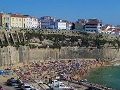
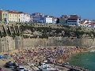

Multimédia
Fotografias | VÃdeo | Poema
Fotografias
- A primeira imagem é referente a uma estátua bastante conhecida na Ericeira, mais concretamente na Praia de Ribeira D'Ilhas.
- A segunda imagem é a Praia dos Pescadores.
- A terceira imagem é o centro da vila, mais conhecido como jogo da bola.

 



Imagens Ericeira
Várias imagens de sÃtios conhecidos na Ericeira
VÃdeo
VÃdeo Ericeira
VÃdeo curto de apresentação da Ericeira
Poema
Ericeira - Meu berço, à flor do mar
Autora: Maria
da Assunção Freire
Oh, minha terra, do “mar salgado”
do
ar lavado, das calçadinhas
do sol mais louro
ancoradouro das
andorinhas.
Terra das pombas, filhas das ondas
em
turbilhão
asas erguidas, cruzes perdidas
na imensidão.
Terra
das praias d´areais louros
dos miradouros, a cada canto
Manhãs de bruma, tardes d´espuma
do meu encanto.
Oh,
minha terra das penedias
das invernias, tanta aflição
bravas
nortadas
fúrias eivadas de maldição.
Calvários
brancos, sabe Deus quantos
no mar sem fim
dores apagadas, santificadas
rogai por mim.
Terra d´
esperanças
onde eu de tranças, bibe de folhos
me vi
crescer
cobre os meus olhos
quando eu morrer.